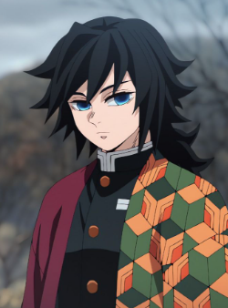
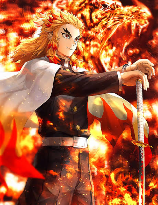
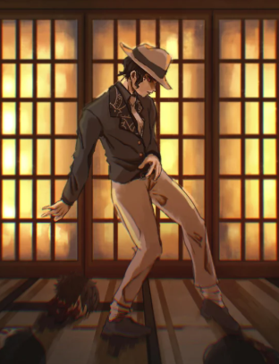
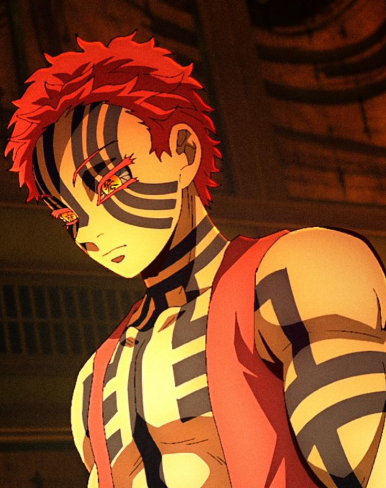

Conheça alguns dos principais personagens de Demon Slayer: Kimetsu no Yaiba.

Tanjiro Kamado é o protagonista da história. Após uma tragédia envolvendo sua família, ele decide se tornar um caçador de demônios e busca uma maneira de transformar sua irmã Nezuko novamente em humana.

Nezuko é a irmã mais nova de Tanjiro. Depois de se transformar em demônio, ela mantém parte de sua humanidade e acompanha Tanjiro em sua jornada.

Zenitsu Agatsuma é um caçador de demônios que acompanha Tanjiro durante sua jornada. Apesar de ser bastante medroso, demonstra grande habilidade quando está em determinadas situações.

Inosuke Hashibira é um caçador de demônios conhecido por seu comportamento impulsivo e por utilizar uma máscara de javali. Ele se torna um dos companheiros de Tanjiro.

Giyu Tomioka é um dos Hashira e possui o título de Hashira da Água. Ele é um dos primeiros caçadores de demônios importantes apresentados na história.

Kyojuro Rengoku é o Hashira das Chamas. Ele possui uma forte personalidade e desempenha um papel importante no arco do Trem Infinito.

Muzan Kibutsuji é o principal antagonista da história e o primeiro demônio. Ele está diretamente relacionado à origem de diversos acontecimentos envolvendo os demônios.

Akaza é um dos principais demônios da história e pertence às Luas Superiores. Ele possui grande importância em determinados momentos da trama.
© Projeto acadêmico - Demon Slayer